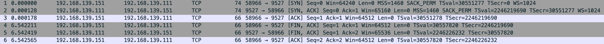
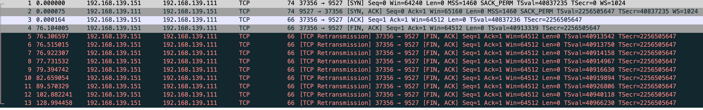
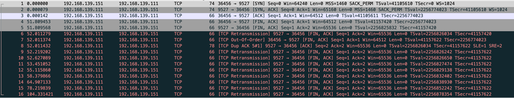
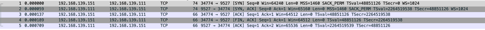
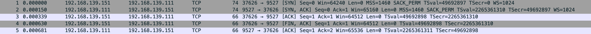
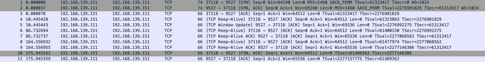
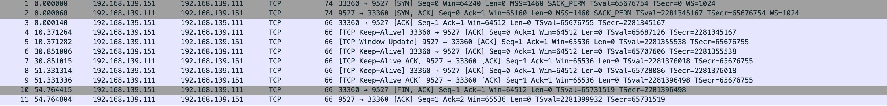

实验流程来自 知识星球：程序员踩坑案例分享
断开连接
同样 vm-2 连接 vm-1，然后 vm-2 做为客户端断开连接
sudo tcpdump -s0 -X -nn "tcp port 9527" -w vm-1-tcp_close.pcap --print
vm-1-tcp_close.pcap

很正常的三次握手连接之后四次挥手关闭连接，一切正常
在看 vm-2 上的连接状态，正常进入 TIME_WAIT 等待 2 * MSL 时间是 60s，没有重试就是在等待
$ sudo netstat -anpo|grep Recv-Q;sudo netstat -anpo|grep 9527
Proto Recv-Q Send-Q Local Address Foreign Address State PID/Program name Timer
tcp 0 0 192.168.139.151:58966 192.168.139.111:9527 ESTABLISHED 34043/nc off (0.00/0/0)
$ sudo netstat -anpo|grep Recv-Q;sudo netstat -anpo|grep 9527
Proto Recv-Q Send-Q Local Address Foreign Address State PID/Program name Timer
tcp 0 0 192.168.139.151:58966 192.168.139.111:9527 TIME_WAIT - timewait (57.43/0/0)
$ sudo netstat -anpo|grep Recv-Q;sudo netstat -anpo|grep 9527
Proto Recv-Q Send-Q Local Address Foreign Address State PID/Program name Timer
tcp 0 0 192.168.139.151:58966 192.168.139.111:9527 TIME_WAIT - timewait (46.88/0/0)
$ sudo netstat -anpo|grep Recv-Q;sudo netstat -anpo|grep 9527
Proto Recv-Q Send-Q Local Address Foreign Address State PID/Program name Timer
tcp 0 0 192.168.139.151:58966 192.168.139.111:9527 TIME_WAIT - timewait (39.88/0/0)
短连接和 TIME_WAIT 状态
调大 tw_buckets 关闭 tw_reuse 测试
$ sudo sysctl -w net.ipv4.tcp_max_tw_buckets=1000000
net.ipv4.tcp_max_tw_buckets = 1000000
$ sudo sysctl -w net.ipv4.tcp_tw_reuse=0
net.ipv4.tcp_tw_reuse = 0
$ cat loopconnect.py
import socket
def connect_and_immediately_disconnect(host, port, count):
try:
for i in range(count):
cli = socket.socket(socket.AF_INET, socket.SOCK_STREAM)
cli.connect((host, port))
cli.close()
except Exception as e:
print(f"Failed to connect: {e}")
if __name__ == '__main__':
connect_and_immediately_disconnect('192.168.139.111', 9527, 70000)
然后测试发现机器的 TIME_WAIT 到 5000 左右就上不去了，无法复现无可用地址的错误，尝试将参数缩小5倍，在将本地可用端口范围变小，能看到达到 233 个 TIME_WAIT 提示无可用地址
$ sudo sysctl -w net.ipv4.ip_local_port_range="32768 33000"
net.ipv4.ip_local_port_range = 32768 33000
$ python3 loopconnect.py
Failed to connect: [Errno 99] Cannot assign requested address
$ sudo netstat -anpo|grep 9527|grep timewait|wc -l
233
开启 tw_reuse 测试
然后开启 net.ipv4.tcp_tw_reuse 参数，将本地可用端口扩大些
$ sudo sysctl net.ipv4.tcp_tw_reuse net.ipv4.ip_local_port_range net.ipv4.tcp_max_tw_buckets
net.ipv4.tcp_tw_reuse = 1
net.ipv4.ip_local_port_range = 32768 38414
net.ipv4.tcp_max_tw_buckets = 200000
查看 TIME_WAIT 数量，稳定在 2000 多，脚本正常跑完退出
$ sudo netstat -anpo|grep 9527|grep timewait|wc -l
2287
2301
2303
2303
2269
2291
2292
2322
关闭 tw_reuse 修改 tw_buckets 测试
$ sudo sysctl -w net.ipv4.tcp_tw_reuse=0
net.ipv4.tcp_tw_reuse = 0
$ sudo sysctl -w net.ipv4.tcp_max_tw_buckets=1000
net.ipv4.tcp_max_tw_buckets = 1000
$ sudo netstat -anpo|grep 9527|grep timewait|wc -l
1000
1000
1000
基本相同，TIME_WAIT 大部分是 1000，监测一会会出现 900 多的状况，我猜测是超过了 2 * MSL 后本地可用地址被释放出来，继续被使用 因为关闭了 tw_reuse 不会被重用，只会等待有可用的地址在继续使用
连接脚本中是 14000 个连接，也就是有 11353 个连接没等待 TIME_WAIT 的 60s 直接被系统处理了
$ sudo netstat -s|grep TCPTimeWaitOverflow
TCPTimeWaitOverflow: 11353
观测 FIN1
vm-2 连接 vm-1，连接后在 vm-1 drop vm-2 发送过来的 FIN，vm-2 发送一个 FIN 后就会进入 FIN1 状态
$ sudo iptables -A INPUT -p tcp --dport 9527 --tcp-flags FIN FIN -j DROP
$ sudo tcpdump -s0 -X -nn "tcp port 9527" -w vm-1-tcp_close-iptables-fin1.pcap --print
vm-1-tcp_close-iptables-fin1.pcap

vm-2 向 vm-1 发送 FIN，vm-1 直接 drop，vm-2 因为收不到 vm-1 发送的 FIN+ACK 就会重传
能看到 vm-2 的网络状态
$ sudo netstat -anpo|grep -E "Recv|9527"
Proto Recv-Q Send-Q Local Address Foreign Address State PID/Program name Timer
tcp 0 1 192.168.139.151:37356 192.168.139.111:9527 FIN_WAIT1 - on (2.52/4/0)
$ sudo netstat -anpo|grep -E "Recv|9527"
Proto Recv-Q Send-Q Local Address Foreign Address State PID/Program name Timer
tcp 0 1 192.168.139.151:37356 192.168.139.111:9527 FIN_WAIT1 - on (34.57/8/0)
这 9 次的重传受 net.ipv4.tcp_orphan_retries 影响，默认是 8
tcp_orphan_retries - INTEGER
This value influences the timeout of a locally closed TCP connection, when RTO retransmissions remain unacknowledged. See tcp_retries2 for more details.
The default value is 8.
If your machine is a loaded WEB server, you should think about lowering this value, such sockets may consume significant resources. Cf. tcp_max_orphans.
观测 FIN2 和 LAST_ACK
还是 vm-2 连接 vm-1 后，在 vm-2 使用 iptables 拦截 FIN，断开 vm-2的连接，FIN1 是 vm-2 发送 FIN 后直接就会进入 FIN1 状态，然后 vm-1 发送 ACK 过来 vm-2 就会进入 FIN2 状态，因为我们拦截了 FIN 所以就能观测到 vm-2 的 FIN2 和 vm-1 的 LAST_ACK
$ sudo iptables -A INPUT -p tcp --sport 9527 --tcp-flags FIN FIN -j DROP
$ sudo tcpdump -s0 -X -nn "tcp port 9527" -w vm-1-tcp_close-iptables-fin2.pcap --print
vm-1-tcp_close-iptables-fin2.pcap

能看到 vm-2 这个连接进入了 FIN2 状态，最后的值显示 timewait (多少s/0/0)，这个 s 是 60，通过 tcp_fin_timeout 控制，这并不是重传 就是 FIN2 的超时时间，过了 60s 连接就会消失
$ sudo sysctl -a|grep tcp_fin_timeout
net.ipv4.tcp_fin_timeout = 60
$ sudo netstat -anpo|grep -E "Recv|9527"
Proto Recv-Q Send-Q Local Address Foreign Address State PID/Program name Timer
tcp 0 0 192.168.139.151:36456 192.168.139.111:9527 FIN_WAIT2 - timewait (57.45/0/0)
$ sudo netstat -anpo|grep -E "Recv|9527"
Proto Recv-Q Send-Q Local Address Foreign Address State PID/Program name Timer
tcp 0 0 192.168.139.151:36456 192.168.139.111:9527 FIN_WAIT2 - timewait (54.12/0/0)
vm-1 的 LAST_ACK，能看到也是在重传 9 次
$ sudo netstat -anpo|grep -E "Recv|9527"
Proto Recv-Q Send-Q Local Address Foreign Address State PID/Program name Timer
tcp 0 0 192.168.139.111:9527 0.0.0.0:* LISTEN 1091/nc off (0.00/0/0)
tcp 0 0 192.168.139.111:9527 192.168.139.151:36456 ESTABLISHED 1091/nc off (0.00/0/0)
$ sudo netstat -anpo|grep -E "Recv|9527"
Proto Recv-Q Send-Q Local Address Foreign Address State PID/Program name Timer
tcp 0 0 192.168.139.111:9527 0.0.0.0:* LISTEN 1091/nc off (0.00/0/0)
tcp 0 1 192.168.139.111:9527 192.168.139.151:36456 LAST_ACK - on (23.09/7/0)
观测 CLOSE_WAIT
使用 python 连接
import socket
c = socket.socket(socket.AF_INET, socket.SOCK_STREAM)
c.connect(('192.168.139.111', 9527))
c.shutdown(socket.SHUT_WR)
$ sudo tcpdump -s0 -X -nn "tcp port 9527" -w vm-1-tcp_close-iptables-closewait-py.pcap --print
vm-1-tcp_close-iptables-closewait-py.pcap

能看到 vm-2 发送 FIN 后进入 FIN1 状态，vm-2 回复 ACK 就结束了，vm-2 收到 ACK 会进入到 FIN2，而 vm-1 只发送 ACK 自己进入 CLOSE_WAIT
同样 FIN2 等待 60s 后不进入 TIME_WAIT 直接结束状态 此状态和文中是对不上的，发送请求后 vm-2 FIN2 会进入 60s 的等待时间，而文中确不会，目前能看到 vm-1 的 CLOSE_WAIT 是一直存在的
vm-2
$ sudo netstat -anpo|grep -E "Recv|9527"
Proto Recv-Q Send-Q Local Address Foreign Address State PID/Program name Timer
tcp 0 0 192.168.139.151:34774 192.168.139.111:9527 FIN_WAIT2 - timewait (55.39/0/0)
$ sudo netstat -anpo|grep -E "Recv|9527"
Proto Recv-Q Send-Q Local Address Foreign Address State PID/Program name Timer
tcp 0 0 192.168.139.151:34774 192.168.139.111:9527 FIN_WAIT2 - timewait (31.64/0/0)
-----------------------------------------------------------------
vm-1
$ sudo netstat -anpo|grep 9527
tcp 1 0 192.168.139.111:9527 0.0.0.0:* LISTEN 1268/python3 off (0.00/0/0)
tcp 1 0 192.168.139.111:9527 192.168.139.151:34774 CLOSE_WAIT - off (0.00/0/0)
修改 net.ipv4.tcp_fin_timeout 测试
$ sudo sysctl -w net.ipv4.tcp_fin_timeout=30
$ sudo tcpdump -s0 -X -nn "tcp port 9527" -w vm-1-tcp_close-iptables-closewait-py-30s-timeout.pcap --print
vm-1-tcp_close-iptables-closewait-py-30s-timeout.pcap

vm-1
$ sudo netstat -anpo | grep -E "Recv-Q|9527"
Proto Recv-Q Send-Q Local Address Foreign Address State PID/Program name Timer
tcp 2 0 192.168.139.111:9527 0.0.0.0:* LISTEN 1268/python3 off (0.00/0/0)
tcp 1 0 192.168.139.111:9527 192.168.139.151:37626 CLOSE_WAIT - off (0.00/0/0)
tcp 1 0 192.168.139.111:9527 192.168.139.151:34774 CLOSE_WAIT - off (0.00/0/0)
-----------------------------------------------------------------
vm-2
$ sudo netstat -anpo | grep -E "Recv-Q|9527"
Proto Recv-Q Send-Q Local Address Foreign Address State PID/Program name Timer
tcp 0 0 192.168.139.151:37626 192.168.139.111:9527 FIN_WAIT2 - timewait (26.30/0/0)
$ sudo netstat -anpo | grep -E "Recv-Q|9527"
Proto Recv-Q Send-Q Local Address Foreign Address State PID/Program name Timer
tcp 0 0 192.168.139.151:37626 192.168.139.111:9527 FIN_WAIT2 - timewait (0.49/0/0)
看样子是没法豁免的，时间只会随着 net.ipv4.tcp_fin_timeout 变动，可能和内核也有关系贴一下我的系统内核
Linux vm-2 6.17.4-orbstack-00308-g195e9689a04f #1 SMP PREEMPT Fri Oct 24 07:22:34 UTC 2025 aarch64 aarch64 aarch64 GNU/Linux
连接保活
默认 keepalive 相关参数
$ sudo sysctl net.ipv4.tcp_keepalive_time net.ipv4.tcp_keepalive_probes net.ipv4.tcp_keepalive_intvl
net.ipv4.tcp_keepalive_time = 7200
net.ipv4.tcp_keepalive_probes = 9
net.ipv4.tcp_keepalive_intvl = 75
import socket
import time
def connect_and_hold(host, port, count):
cli_list = []
try:
for i in range(count):
cli = socket.socket(socket.AF_INET, socket.SOCK_STREAM)
cli.setsockopt(socket.SOL_SOCKET, socket.SO_KEEPALIVE, 1)
cli.connect((host, port))
cli_list.append(cli)
except Exception as e:
print(f"Failed to connect: {e}")
while True:
time.sleep(1)
if __name__ == '__main__':
connect_and_hold('192.168.139.111', 9527, 1)
$ sudo tcpdump -s0 -X -nn "tcp port 9527" -w vm-1-tcp_close-vm-2-keepalive.pcap --print
vm-1-tcp_close-vm-2-keepalive.pcap

连接后没数据传输，vm-2 每隔 75s 给 vm-1 发送 TCP Keep-Alive，走的 net.ipv4.tcp_keepalive_intvl
vm-2
$ sudo netstat -anpo|grep -E "Recv-Q|9527"
Proto Recv-Q Send-Q Local Address Foreign Address State PID/Program name Timer
tcp 0 0 192.168.139.151:37118 192.168.139.111:9527 ESTABLISHED 25305/python3 keepalive (71.33/0/0)
$ sudo netstat -anpo|grep -E "Recv-Q|9527"
Proto Recv-Q Send-Q Local Address Foreign Address State PID/Program name Timer
tcp 0 0 192.168.139.151:37118 192.168.139.111:9527 ESTABLISHED 25305/python3 keepalive (70.62/0/0)
叫 grok 改了 python 脚本
import socket
import time # 添加 time 模块以便暂停脚本查看连接状态
c = socket.socket(socket.AF_INET, socket.SOCK_STREAM)
c.setsockopt(socket.SOL_SOCKET, socket.SO_KEEPALIVE, 1)
# 设置 keepalive 参数：TCP_KEEPIDLE 为空闲时间（相当于 net.ipv4.tcp_keepalive_time），单位秒
c.connect(('192.168.139.111', 9527))
# 暂停脚本以便用 netstat -anpo 或 ss -anto 查看连接状态（会显示 keepalive timer 如 timer:keepalive (10.000 sec)）
print("连接已建立，按 Enter 退出...")
input() # 或用 time.sleep(60) 自动等待 60 秒
c.close()
$ sudo sysctl -a|grep keep
net.ipv4.tcp_keepalive_intvl = 20
net.ipv4.tcp_keepalive_probes = 9
net.ipv4.tcp_keepalive_time = 10
$ sudo tcpdump -s0 -X -nn "tcp port 9527" -w vm-1-tcp_close-vm-2-keepalive-10s.pcap --print
vm-1-tcp_close-vm-2-keepalive-10s.pcap

正常三次握手，然后 vm-2 发了 Keep-Alive vm-1 回复，3和4的包之间隔了 10s 也就是 net.ipv4.tcp_keepalive_time，然后 vm-1 和 vm-2 之间没发送数据，相隔 20s 第6个包 vm-2 发了 Keep-Alive 也就是 net.ipv4.tcp_keepalive_intvl，最后 vm-2 enter 直接断开 发了 FIN+ACK vm-1 回了 ACK 但是没回 FIN vm-1 状态就是 CLOSE_WAIT，vm-2 则是 FIN2 然后根据 fin_time 30s 过去就消失
vm-1
$ sudo netstat -anpo | grep -E "Recv-Q|9527"
Proto Recv-Q Send-Q Local Address Foreign Address State PID/Program name Timer
tcp 1 0 192.168.139.111:9527 0.0.0.0:* LISTEN 1692/python3 off (0.00/0/0)
tcp 0 0 192.168.139.111:9527 192.168.139.151:33360 ESTABLISHED - off (0.00/0/0)
$ sudo netstat -anpo | grep -E "Recv-Q|9527"
Proto Recv-Q Send-Q Local Address Foreign Address State PID/Program name Timer
tcp 1 0 192.168.139.111:9527 0.0.0.0:* LISTEN 1692/python3 off (0.00/0/0)
tcp 1 0 192.168.139.111:9527 192.168.139.151:33360 CLOSE_WAIT - off (0.00/0/0)
-----------------------------------------------------------------
vm-2
$ sudo netstat -anpo|grep 9527
tcp 0 0 192.168.139.151:33360 192.168.139.111:9527 ESTABLISHED 27528/python3 keepalive (7.38/0/0)
$ sudo netstat -anpo|grep 9527
tcp 0 0 192.168.139.151:33360 192.168.139.111:9527 ESTABLISHED 27528/python3 keepalive (17.59/0/0)
$ sudo netstat -anpo|grep 9527
tcp 0 0 192.168.139.151:33360 192.168.139.111:9527 FIN_WAIT2 - timewait (26.96/0/0)
$ sudo netstat -anpo|grep 9527
tcp 0 0 192.168.139.151:33360 192.168.139.111:9527 FIN_WAIT2 - timewait (23.06/0/0)
TCP_CLOSE 状态
没找到合适的，自己画了个